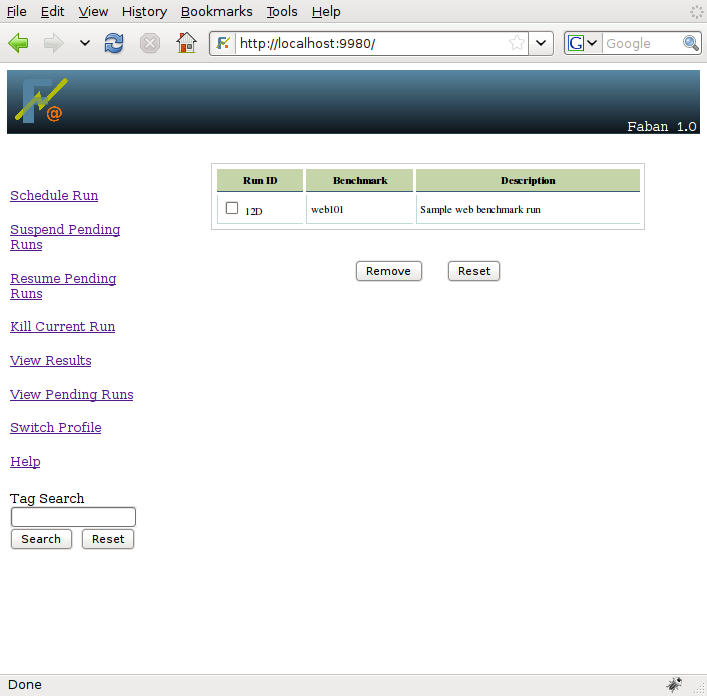
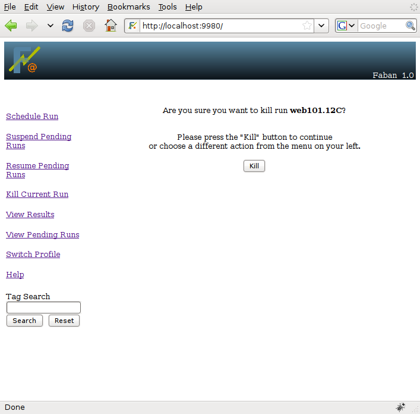

Once a run is scheduled, it stays in the run queue as pending runs
until it gets executed. As soon as execution starts, the run will start
to produce results. Not yet the final results but at least some of the
files and logs and are viewable through the results screen. These runs
can be managed with options both directly available on the menu bar and
through the View
Pending Runs and View Results
screen. The followings discuss common management tasks:
These are menu options from the menu bar. They simply stop the run
queue from being executed and resume such execution. If the run queue
is suspended, the pending runs will not start execution even though
there is no run executed at the present time. This is very useful if
the
rig runs into problems causing runs to fail. Continuing runs will be a
waste of time and resources. The run queue should be suspended until
the problem is fixed.
The View Pending Runs option from the menu bar allows you to list
the pending runs and delete them as necessary, before they start
execution. If the submitted run is known to have problems or will have
problems when run, removing the run from the run queue is the best
choice.
To list the pending runs, select View Pending Runs from
the menu bar. If there are pending runs, a list such as the one below
will be shown:

To remove a run, just simply select the run and press the remove button.
Once a run starts execution, and before it is finished, it is
considered current. To see whether there is a current run, select the
View Results
screen from the menu bar. The current run carries the
status STARTED and is usually
the first entry in the result list table.


A run can also be killed as it is running. To do so, just simply select Kill Current Run from the menu bar. Faban will show a dialog asking you to confirm killing the run and if confirmed, all processes as part of the run will be killed.
